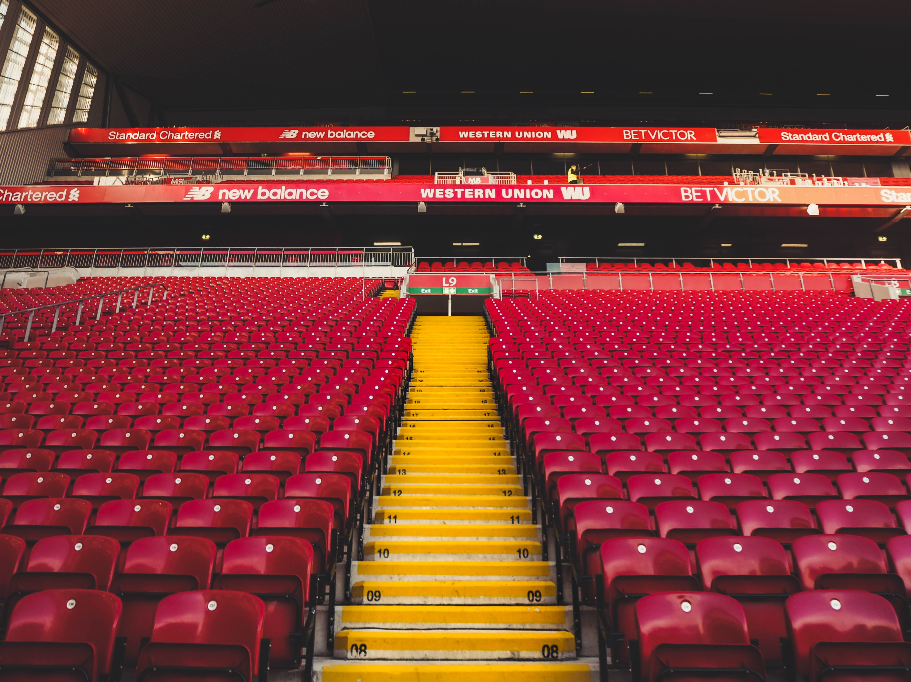

Liverpool Football Club is a professional football club in Liverpool, England, that competes in the Premier League, the top tier of English football. The club has won six European Cups, more than any other English club, three UEFA Cups and four UEFA Super Cups, also English records, eighteen League titles, seven FA Cups, a record eight League Cups and fifteen FA Community Shields.
Founded in 1892, the club joined the Football League the following year and has played at Anfield since its formation. Liverpool established itself as a major force in English and European football in the 1970s and 1980s when Bill Shankly, Bob Paisley, Joe Fagan and Kenny Dalglish led the club to a combined eleven League titles and four European Cups. Under the management of Rafael Benítez and captained by homegrown player Steven Gerrard, Liverpool became European champions for the fifth time in 2005, before a sixth title was added under Jürgen Klopp in 2019.
